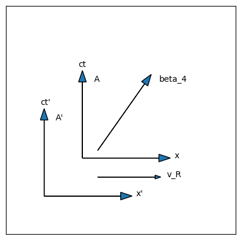
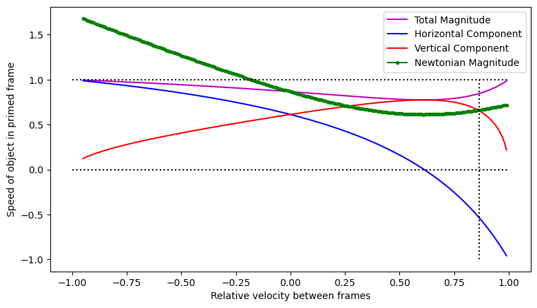

7. The Velocity Four-Vector#
Once we have carefully defined what we mean by position and displacement, as measured in a particular reference frame, we can turn our attention to the question of motion. Specifically, we can carefully define velocity as the rate of change of displacement: how much the displacement is changing in a given time interval.
However, since we have shown that time intervals are themselves dependent on the choice of reference frame, we must also be very careful that we are clear and precise about which time interval we are considering, when speaking of velocity. It should already be obvious to any reader that two objects in relative motion will have different velocities depending on the reference frame of an observer, but the role of time dilation and length contraction when the speeds in question approach that of light is anything but obvious.
A careful treatment of velocity will also enable us to address the question of how velocities change when considered from different reference frames in relative motion, and therefore enable us to calculate how velocities will add. If you are in a rocketship travelling at almost the speed of light, and you throw a ball forward, will that ball not exceed the speed of light limit? How can a careful treatment of velocity help us understand such apparent contradictions?
7.1. Background#
In the slow moving world of dump trucks and physics professors, the physical velocity of an object as measured by an observer is given by the vector quantity:
A second observer, moving at velocity \(\vec{v}_R\) in some direction, measures this same object moving with velocity:
The value of the time interval \(dt\) is the same for both observers. Prior to Einstein, it would have never occured to anyone to question whether \(dt\) might be different for different observers.
In Equation (7.1), the derivative can be understood in two ways. First, it is an operator that transforms the displacement vector, that can be a function of time, into the velocity vector (that also can be a function of time). A second way of understanding the derivative is that it is a ratio of two elements, a very very small vector change in the displacement divided by a very very small change in scalar time.
Physical velocity is a vector because the displacement, \(d\vec{R}\) is a 3-vector and \(dt\) is a scalar. A vector divided by a scalar is a vector.
7.2. The Four Velocity#
We cannot define a four velocity by simply taking the displacement four vector \([dx_4]\) and dividing by \(dt\), because \(dt\) is not, in fact, a scalar. It changes under a Lorentz transformation, and therefore \([dx_4]/dt\) will not have the properties of a four vector as defined in Chapter 2. However, the proper time interval, \(dt_0\), is a scalar! So we can define a four velocity as
where \(dt_0\) is the Lorentz scalar as described in Chapter 6. Since \(dt_0\) is a scalar, \(1/dt_0\) is also a scalar. The 4-velocity is a proper 4-vector because the displacement 4-vector is a proper 4-vector and \(1/dt_0\) is a Lorentz scalar. A Lorentz scalar times a proper 4-vector is a proper 4-vector.
When you multiply a vector by a scalar, what really happens is that you multiply each of the components of the vector by that scalar quantity. Putting in the components of the displacement 4-vector into equation (7.3) and multiplying each by \(1/dt_0\) gives:
The derivatives that are the three spatial components of the velocity 4-vector are not the velocity of the object, as \(dx\) is in measured in a different reference frame than \(dt_0\). Within a given reference frame the motion of an object would be written as \(dx/dt\), where \(t\) is measured in that reference frame (an observer in one reference frame does not “just know” what is going on in another reference frame, after all). This would be the velocity as Isaac Newton would have understood the term.
However, we can use the time-dilation formula from Equation (6.6) to convert \(dt_0\) to \(dt\). We take \(\beta\) to be the relative speed of this reference frame to the frame in which the two events are at rest. Then we define \(\gamma\) the usual way. Equation (7.4) then can be written as:
Warning
From here on, there are going to be several, perhaps even many, different instances of the factor \(\gamma\). In all cases, \(\gamma = 1/\sqrt{1-\beta^2}\), but \(\beta\) is a speed, and therefore must be relative to something else. In the case of Equation (7.5), the speed in the \(\gamma\) is the speed of whatever it is that has the velocity this four-vector is describing. It relates to the time interval between two events, compared with those two events at rest. This is not necessarily the same thing as the relative speed between two reference frames, which I will call \(\beta_R\) and \(\gamma_R\). You will soon see cases where there are three reference frames of interest: the rest frame of an object, a frame in which the object is moving, and then a third frame in which the object will be moving at a different speed. There are therefore five velocities that could be of interest (the velocity of the object in the second frame, the velocity of the object in the third frame, the relative velocity between frame two and three, and the two relative velocities between frames two and three, each, to the rest frame). Each of these velocities could have a useful \(\gamma\) associated with it. From here on, you must pay attention to which \(\beta\) speed goes with which \(\gamma\)!
According to the correspondence principle, the theory we call special relativity has to reduce to Newton’s mechanics when \(\beta\ll 1\). As \(\beta\) approaches 0, \(\gamma\) approaches 1. Notice that the three space terms of the 4-velocity are just the components of the physical velocity as Newton would know it. The time component is just the speed of light. At this point, the 4-velocity meets the requirements of the correspondence principle. If Newton had been able to observe things that were moving very fast with respect to him, he probably would have noticed that the factor of \(\gamma\) would have to be accounted for in the definition of the physical velocity of the object.
Accounted for is perhaps an ambiguous phrase. The velocity of an object that moves between two events in a particular reference frame is going to be \(d\vec{r}/dt\), without the gamma. However, for the four-velocity to be a proper four-vector, the gamma needs to be there. This means when you are using velocity four-vectors, you can’t just look at the space terms as being equal to the velocity, you have to divide by \(\gamma\) to get \(v\). This is a side effect of how we define velocity.
If the 4-velocity is a proper 4-vector, then the 4-velocity must obey the demand of the Michelson-Morley experiment that its size must be a scalar. The size of the 4-velocity is:
factor out the gamma and use \(v^2=v_x^2+v_y^2+v_z^2\):
Once again, the size of a 4-vector is a negative number. (This is not surprising, since the size of the four displacement is negative, and \(dt\) is always defined to be postive.) The experimental evidence is that the speed of light has the same value for all inertial observers, so the size of the 4-velocity is therefore a scalar quantity. The 4-velocity meets the requirements set forth by the Michelson-Morley experiment.
When objects are traveling near the speed of light, a convenient quantity to define is a unitless 4-velocity known as the 4-beta. This saves writing down “\(\times 10^8\) m/s” over and over again.
Note that the size of the beta four vector that you get if you square and add the terms is \(-1\), which is just what you would expect if you took the square of the four velocity and divided by \(c^2\). The constant \(-1\) is of course also invarient across reference frames, and therefore also a Lorentz scalar, as the size of a four vector must be.
It can be interesting to think about this four vector in the context of spacetime hyperbolic rotations as explained in Section 5.7. The magnitude of the beta four vector is \(-1\). That is its size, which must maintain the same value through Lorentz transformations into reference frames in relative motion. For an object at rest, we would say its velocity is zero, but the four-velocity must still have a size of \(-1\), so it has a time component of \(i\). It’s not wrong to think of this component as defining a “velocity in time”. Any object sitting still in space is still moving forward in time, at a rate of one second per second (in its own rest frame).
It is tempting to say that the velocity through time will change if you increase the velocity through space. This isn’t wrong, exactly, but you have to be very careful with how the words connect to the mathematics. We define velocity through space as the space components of the velocity four vector divided by \(\gamma\). If we define a velocity through time, we must be consistent and also divide by \(\gamma\). That would imply the time velocity is \(1\) (or \(c\)) no matter what the speed (\(dx/dt\), without the \(\gamma\)) is. The change in the time component of the four-velocity comes from the time dilation factor, and we do not include that factor in our definition of the word “velocity”. The velocity through time is therefore a universal, unchanging constant.
As long as you are consistent with your definitions, it is fair to say that the speed limit of the universe, \(\beta=1\) is set by the demand that the size of the velocity four-vector remain \(-1\), no matter how far you rotate it through hyperbolic space time. Since both time and space components increase by the same factor \(\gamma\), the fact that the time component of \([v_4]\) is \(i\gamma c\) means that the space velocity can never get bigger than \(c\), no matter how big \(\gamma\) gets. If it did, then the difference of the squared components would no longer be \(-c^2\). Hyperbolic rotation preserves the size of a four-vector just as spacial rotation preserves the size of a three-vector. Thinking of changing speed as a rotation is also helpful in understanding what happens to velocities when you consider them from the point of view of a relatively moving frame of reference, as explored in the next section.
Checkpoint
Why is it important to change the \(dt_0\) to a \(dt\)?
Choose the answer you think is correct and then click the button.
7.3. Addition of Velocities#
The universality of the speed of light poses a very difficult interpretive problem that we are now in a position to start to address. If a person is on a train and throws a ball toward the front of the train, all observers on the train will agree that the ball has a certain velocity. Let’s call it \(+v_b\). To an observer on the ground, let’s say Galileo, who is being passed the train at this moment, the ball must be moving faster than the train (since it is catching up to the forward wall of the car), and if the train is going \(+v_t\), Galileo would say the ball is going \(v_b+v_t\). The motion of the train gives the ball a boost, according to Galileo’s frame of reference on the ground.
However, if we bring Einstein into it, we can ask, “what happens if the ball is going at three-quarters of the speed of light with respect to the train, and the train is going at three-quarters the speed of light with respect to the ground?” Then, according to Galileo, the ball would be moving at \(1.5c\), which Einstein says is impossible. To take it even further to an extreme, what if the person on the train flashes a laser pointer toward the front of the train. The people on the train would certainly measure the photons in the laser beam to be moving at the speed of light, but Galileo would expect to measure the light moving at \(c+v_t\), which both Einstein’s theory and the Michelson-Morely experiment say is impossible.
How do we resolve this dilemma??? By Lorentz-transforming the velocity four vector, we can determine how someone like Galileo would measure velocities in a reference frame in relative motion, compared with someone on the train. So, we set up the problem…
An observer at rest with respect to a reference frame (call it A) measures the components of the four velocity of an object that is moving with respect to her. A second observer, A’, moving with speed \(\beta_R\) in the \(+x\) direction with respect to the observer A, also measures the components of the 4-velocity for the object. How are the components of these two 4-vectors related?

Fig. 7.1 A beta four vector represented in a spacetime diagram for a reference frame \(A\). A second reference frame \(A'\) is moving to the right, relative to the first, with a speed \(v_R\). In this case, the time component of the beta four vector represented by the diagonal arrow is 1.0 and the space component is 0.7, so the actual speed being represented here is \(\beta = 0.7/1.0 = 0.7\), or seven tenths the speed of light.#
To figure this out, let us first diagram this situation. It’s not strictly necessary, but helps make sure we use the correct minus sign. The spacetime diagrams that define a Lorentz transformation are shown in Fig. 7.1. In this case, depending on how \(\beta_R\) compares with \(\beta\), we would expect \(\beta^\prime\) to be less than \(\beta\), perhaps even going negative. In particular, if \(\beta_R=\beta\), our theory had better predict that \(\beta^\prime=0\), or something is seriously wrong. The correspondence principle demands that when \(\beta_R\ll 1\), the prediction we get should reduce to \(\beta'=\beta-\beta_R\), which is what Galileo would expect it to be.
Warning
In the diagram shown in Fig. 7.1, the relative velocity refers to the reference frames. The right-pointing arrow means that the ground is moving right, relative to the train. This means from the ground’s point of view, the train is travelling left, which is in the opposite direction of the ball’s velocity. The initial set up I described above had the ball thrown in the same direction as the train’s velocity. To get that situation, mathematically, just flip the direction of \(v_R\) in Fig. 7.1.
I will leave it this way because the default for a Lorentz transformation is to have \(+v_R\) point to the right. The minus case will be included later.
The unprimed observer measures a 4-beta:
from here, we will drop the zeros and just work with the first two components:
Again, remember that \(\beta\) is the velocity of the object as measured in the original frame A (\(\gamma = 1/\sqrt{1-\beta^2}\)), \(\beta_R\) is the relative velocity of the two frames (\(\gamma_R = 1/\sqrt{1-\beta_R^2}\)), and \(\beta^\prime\) is the velocity of the object in the primed frame A’ (\(\gamma^\prime = 1/\sqrt{1-\beta^{'2}}\)). It gets tricky to keep all the different \(\beta\) and \(\gamma\) factors straight, but if you maintain a consistent notation, it’s easier to hold the connections in your head.
If we divide the space component by the time component, we get
This is known as the velocity addition formula. Note that although it is quite different from what Newton or Galileo would have expected, it does meet all the conditions we laid out before we started. This formula does give us a \(\beta'<\beta\), if \(\beta_R=\beta\) we do get zero, and if \(\beta_R>\beta\) the velocity goes negative (the relative velocity is faster, so the object is being overtaken in the primed frame). Furthermore, it also satisfies the correspondence principle, because if \(\beta_R\ll 1\), then the denominator is basically not different from one, and therefore Galileo would insist his answer was not wrong.
This formula also takes into account what happens if the relative velocity goes the other way: simply change the minus signs to plus signs. Sometimes you will see the formula written with \(\mp\) symbols, but that’s not strictly necessary, as long as you remember to set up the problem with the reference frames as indicated in Fig. 7.1.
Finally, note that this formula allows us to avoid the problem of going faster than light if the speeds get large. Consider the inverse transformation where the train and the ball are moving in the same direction (\(\beta_R\rightarrow -\beta_R\)). If \(\beta=0.75\) and \(\beta_R=-0.75\), then \(\beta'\neq1.5\)! If you plug those numbers in, you get 1.5 in the numerator, but you get 1.5625 in the denominator, so \(\beta'=0.96\). That’s faster than \(\beta\), which you expect, but not bigger than one.
Most importantly, note what happens if \(\beta=1\). For example, someone on a train shines a laser toward the front of the train – how fast would someone on the ground measure the light to be moving? Surely not the speed of light plus the speed of the train, as Galileo would expect? In Eq. (7.12), the numerator becomes \(1\mp\beta_R\), because \(\beta=1\), but in the denominator, the product of \(\beta\beta_R\) becomes just \(\beta_R\), so the denominator is also \(1\mp\beta_R\)! This means that \(\beta'=1\), which is another way of saying that anything going at the speed of light in one frame will be found to be going at the speed of light in any other frame! The person with the laser on the train and the person on the ground will both measure the light as having the same speed. The speed of light is the same in all inertial frames, as consistent with the first postulate and the Michelson-Morely experiment.
It is important to be able to visualize the implications of Equation (7.12). The relationships between relative velocities is shown in Fig. 7.2. The animation shows the worldlines for three objects in relative motion, while the slider allows you to change reference frames via your own relative velocity. The default beginning state of the figure is that your observation frame is at rest with respect to the red object. In this reference frame, the orange object is moving left at \(\beta_b=0.3\) and the green object is moving right at \(\beta_g=0.7\). You could interpret this as the worldlines of a spaceship (red) passing by a planet (orange) while being overtaken by a faster spaceship (green). At the origin, all three objects are at the same location.
By moving the slider, you can shift your perspective into reference frames with different relative motion. Slide the bar to the left until the orange line is vertical. This is the reference frame of the planet as two spaceships going at difference speeds pass it. The green spaceship is faster than the blue spaceship, as it must be, but it does not exceed the speed of light. Continue moving the slider to the left, and you can see the speed of all three objects will approach the speed of light, but never reach it. If you move the slider to the right, you can reach the reference frame of the green object, where the red and orange objects will be falling behind, and the orange object is moving faster than the red one.
Fig. 7.2 Animation of how velocity addition works. The figure shows a spacetime diagram for three objects in relative constant velocity motion. The velocity of the object is displayed in a box above the top of the worldline. By moving the slider, you can change the relative velocity of the reference frame of the diagram. A vertical worldline indicates an object at rest, and then the boxed numbers display the relative velocities of the other two objects in that reference frame. Move the slider to find the rest frames for all three objects.#
7.4. Off-Axis Components of Velocity#
Suppose that a particle is traveling with a velocity of \(\beta\) at an angle \(\theta\) with respect to the \(x\) axis of the unprimed frame. The 4-beta measured by an observer in the unprimed frame now has more than two non-zero terms in it. The \(x\) and \(y\) components are found by applying trigonometry (which is to say, if the hypoteneuse is \(\gamma\beta\), then \(x=\gamma\beta\cos{\theta}\) and \(y = \gamma\beta\sin{\theta}\)):
where \(\gamma=1/\sqrt{1-\beta^2}\), as usual.
A second observer, moving with \(\beta_R\) pointing in the \(+x\) direction with respect to the first observer would measure this same velocity as having a different size and direction. Setting up a Lorentz transformation into a primed frame:
which yields
To deduce what the angle with the \(x'\) axis is, we take the ratio of the first two spatial components in the primed frame:
If Newton had tried to solve this problem, he would have deduced that the \(x\) component of \(\beta\) would be reduced by \(\beta_R\), and the \(y\) component would be unchanged. If you let \(\gamma_R\rightarrow 1\), Equation (7.16) reduces to this result, so the correspondence principle is satisfied, but if \(\gamma_R\) is bigger than 1, then the angle will be reduced relative to Newton’s prediction.
If you wanted to know the value of \(\beta'\), you would need to divide each space component of \([\beta_4]'\) by the time component (to get rid of the \(\gamma'\)) then square them and add them (to get rid of the trig functions):
This equation is a bit harder to get any intuition out of, but note that at slow speeds, as \(\beta_R\rightarrow 0\) and \(\gamma_R\rightarrow 1\), the denominators all go to 1. The numerators are just what Newton would expect, as explained above. So the correspondence principle is satisfied. To try to get some more intuition about the implications of this equation, a graph is more helpful than an equation. Fig. 7.3 shows a graph of \(\beta'\) as a function of \(\gamma_R\) for an arbitrary choice of unprimed values of \(\beta=0.866\) and \(\theta=\pi/4\).

Fig. 7.3 Values for the off-axis beta velocity in the primed frame, for an unprimed \(\beta=0.866\) at \(\pi/4\) above the \(x\) axis. The blue line shows the horizontal component of \(\beta'\) while the red line shows the vertical component. The magenta line is the total magnitude of \(\beta'\). The green line shows the answer that Newtonian physics predicts for the magnitude of \(\beta'\). Note that the two theories agree near \(\beta_R=0\), as the correspondence principle says they should, although the Newtonian theory of course predicts speeds faster than light. Horizontal dotted lines show zero velocity and the speed of light, while a vertical dotted line shows the original magnitude of \(\beta\). Note that the horizontal component switches direction, as you expect. All components of \(\beta'\) head toward one as the relative speed goes to one, in either direction.#
The implications of this graph are difficult to visualize, so I have also provided an interactive vector visualization of the same equations in Fig. 7.4. The slider changes the relative velocity of the observer frame. The white arrow shows the relativistic velocity, where the components are defined by the blue and red lines in Fig. 7.3. The magnitude of the vector (the magenta line in Fig. 7.3) is in a white box at the end of the arrow, and the angle with the x-axis (in degrees) is in the orange box. The green arrow shows the Newtonian prediction, where the y-component of the velocity is not affected by the motion in the x-direction. As you move the slider, that is like moving horizontally in Fig. 7.3, and the values of the lines in Fig. 7.3 are used to construct the arrows you see in Fig. 7.4. As you move the slider, make sure you understand how the behavior of the arrows matches the curves in Fig. 7.3.
The default relative velocity, zero, is the frame in which the \(\beta=0.866\) is measured, so the green and white arrows agree at that \(\beta_R\). Note that as you change the relative velocity, the magnitude of the relativistic velocity never goes above one. At \(\beta_R=0.866\times\cos{\theta_0}\), which is about 0.62, the horizontal components of both arrows will be the same (zero), but the vertical components are not the same. Note also that the vertical component of the green arrow does not change – in Newtonian physics, relative motion in the x direction has no effect on speed in the y-direction. However, the y component of the relativistic velocity changes significantly, so for large values of \(\beta_R\), the directions of the velocities are quite significantly different.
Fig. 7.4 Interactive representation of the velocity vectors for off-axis motion, as a function of the relative velocity of the observer’s frame. The relative velocity can be changed with the slider. The white arrow shows the relativistic velocity, where the components are defined by the blue and red lines in Fig. 7.3. The magnitude of the vector (the magenta line in Fig. 7.3) is in a white box at the end of the arrow, and the angle with the x-axis (in degrees) is in the orange box. The green arrow shows the Newtonian expectation. To help guide the eye, the height of the y-component of the Newtonian velocity is marked with a horizontal red line.#
The implications of this analysis are bizarre and uncomfortable when viewed from our life experience down here in the world of dump trucks and horses. We learn in introductory physics that perpendicular directions can be treated independently. A ball tossed at an angle relative to the ground accelerates in the vertical direction and therefore traces out a parabola in height, while the horizontal velocity remains unchanged. Run alongside the ball at that horizontal velocity, and it will look to you like the ball simply goes straight up and back down again. The horizontal motion has no effect on the vertical motion.
But the relativistic analysis demands that the off-axis velocity is affected by the relative motion along the axis. As the on-axis velocity increases (follow the blue line in Fig. 7.3 to either the right or left end), the off-axis velocity (the red line) must decrease. This counter-intuitive result is the direct result of demanding that the overall magnitude of the four-vector remain constant. If \(\beta_x^2+\beta_y^2\leq 1\), then as \(\beta_x\rightarrow 1\), \(\beta_y\) must get smaller. If it didn’t, the sum of the squares would exceed the speed limit of the universe.
However, this leaves us with the unsettling conclusion that changing the relative motion of two reference frames can actually change the velocity in a perpendicular direction. Classically, we define a change in velocity as an acceleration, and Newton’s second law demands that an acceleration be linked to a force. There are no forces involved in changing reference frames – if I pass you on the highway, I exert no force on your car to make it move backwards relative to mine. If there is no force involved, how can there be a change in velocity? How do Newton’s Laws work in the context of Special Relativity?
To answer these questions, we must turn to the analysis of the four vectors for acceleration and force, which we tackle in Chapter 10. However, force is fundamentally the rate of change of momentum. Before we can understand force, we must first grapple with how relativity affects the concept of momentum. This is the main topic of Chapter 8.
7.5. Problems#
Janet is taking a joy ride on a rocket, traveling with \(\beta = 0.72\) with respect to the Earth, when an alien space craft overtakes her and leaves her in its cosmic dust trail. She measures its speed as \(\beta=0.82\). How fast is this alien space craft traveling with respect to the Earth?
A muon is traveling in the \(x\) direction in the lab at a speed \(\beta 0.66\). In its rest frame, it decides to decay by ejecting an electron in the y direction with a \(\beta = 0.42\). What is the speed and direction of motion of the electron as seen by an observer in the lab.
A space ship leaves the Earth, traveling at a speed \(\beta = 0.866\). A few minutes later, a second space ship is launched that travels at \(\beta = 0.711\) (both speeds relative to the Earth). Find the speed of the second ship with respect to the first if:
a) the second is launched in the same direction as the first
b) the second is launched in the opposite direction of the first.
A laser beam is sent from the earth towards the moon. An observer in a space ship traveling from the moon to the Earth at a speed \(\beta = 0.866\) sees the photons in the beam. What speed does the observer on board the space ship measure for these laser photons?
Two synchonized clocks are very slowly separated until they are \(4\times10^7\) m apart. The pilot of a jet plane synchronizes their atomic clock with the first clock, and then flies at 300 m/s toward the second. As they pass the second clock will their clock be ahead or behind, and by how much?
A photon is traveling at an angle of 30 degrees with respect to the \(x\) direction as seen by an observer. A second observer, traveling with \(\beta = 0.866\) in the \(+x\) direction, also measures the velocity of this photon. Use the Lorentz transformation to calculate the value that the second observer get for this measurement. Check that the four-beta still has a square of \(-1\). What is the angle with respect to the \(x\) axis according to the second observer? Does the answer make sense? Why?
Show that for particles traveling very near the speed of light
Use this result to find \(\gamma\) for an electron that is traveling at a speed of 0.1 m/s less than the speed of light.
A particle, moving at a speed \(v\) with respect to the lab, experiences a very quick acceleration and acquires an infinitesimal increment in speed \(dv\). In the frame of reference moving with this particle at that moment (moving with speed \(v\) with respect to the lab) the increase in the speed is \(dv_0\).
Use the velocity addition formula Equation (7.12) (with appropriate approximations for small changes in velocity) to show that
A particle is started from rest, and given very many such small accelerations. The acceleration that the particle experiences in the rest frame is constant, so \(dv_0\) has some constant value. Show that the speed \(v\), for this particle as measured by an observer in the lab will never exceed \(c\), even for an infinite number of such accelerations.